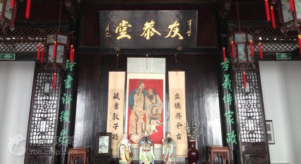
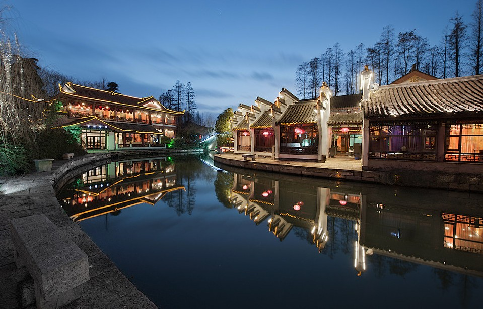

|  | 南京，简称“宁”，古称金陵、建康，是江苏省会、副省级市、南京都市圈核心城市，下辖11个区，总面积6587km²，2016年建成区面积1125.78km²，常住人口827万人，城镇人口678.14万人，城镇化率82%，是长三角及华东唯一的特大城市。 |
南京地处中国东部、长江下游、濒江近海，是中国东部战区司令部驻地，长江国际航运物流中心，长三角辐射带动中西部地区发展的国家重要门户城市，也是东部沿海经济带与长江经济带战略交汇的重要节点城市。 南京是中国四大古都、首批国家历史文化名城，是中华文明的重要发祥地，有着7000多年文明史、近2600年建城史和近500年的建都史，有“六朝古都”、“十朝都会”之称，有“天下文枢”、“东南第一学”的美誉。 |
|
|  | 2018年4月，入选“2018畅游中国100城”；4月，中国联通将在南京等16个城市开展5G试点；4月17日，南京以131.60的全面小康指数排名2017中国地级市全面小康指数第8位；4月21日，入选中国“精英城市”12强。 2018年6月，第一财经·新一线城市研究所发布城市夜生活指数排名，南京位居第13位。 |